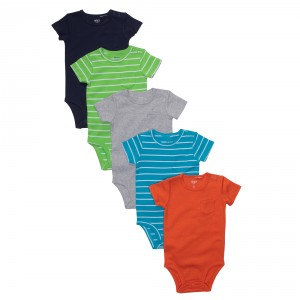

I’m a sucker for stripes on my babies. When I saw this line of baby clothes at Target, I just about keeled over from the cuteness.
Kee-Ka Organic, Target


I’m a sucker for stripes on my babies. When I saw this line of baby clothes at Target, I just about keeled over from the cuteness.
Kee-Ka Organic, Target
My hubby is a big fan of the V-Neck tee, so when I saw these in baby form… OMG I have to have one for his little mini me. And I mean, STAT!
Gap, Baby V Neck

One more post about preschool gear and I promise I’ll stop! But you guys! How CUTE are these sandwich cutters!!
As I said on Monday, my little guy is headed to preschool in the fall and in addition to a lunchbox, I need to get the little guy a backpack. Â And I REALLY want to get him something cute! Â So far these are some that I have run across that I’m contemplating. Â Anybody have any other suggestions or sites I can check out?
My oldest is going to start preschool this fall (OMG where did the time go??) and he’s going to have to start bringing his lunch with him. Â So I went on a hunt for a lunchbox and I THINK I’ve narrowed it down to these two. Â The pros are that I won’t need to put anything in baggies. Â Anybody out there have either of these and can tell me the cons?
Little did I know how popular this foam mat would be when I purchased it for a cushy place for AJ to play. Who knew that not only would it be a place to sit, stand, roll and flop…it doubles as the #1 pick for something to teeth on and triples as an all around favorite toy to rip apart and have mommy put back to together.  $24 well spent. I can’t recommend it enough. 

We’ve always been huge Mo Willems fans around here with our first love being the Pigeon series. Â And the Knuffle Bunny has become the newest favorite series around here for bedtime stories. This series follows Trixie and her stuffed bunny and has the same type of humor that Mo Willems is famous for.
By the way, these would be a great gift for a little one. Â I love when we get books as gifts!!
When we threw AK a baby sprinkle for her second bambino, she received the cutest of onesies I have ever seen. I just KNEW I had to have them for my little guy. Of course, the are Carter’s. I love Carter’s. As much as my baby has a dunlap, he still if of the longer and leaner variety when it comes to babies and Carter’s seems to be a great fit all through his first 7 months. Anyway, drum rolllll…. here are the cutest, most basic baby boy onesies ever. LOVE LOVE LOVE them.
I have a very important question that I need answered and I’m calling on all you moms out there since I’m new at this. See that little guy down there?  He is uber hot natured at his ripe old age of almost 7 months. We aren’t even in the heat of the summer and the poor little guy has almost over heated several times just from riding in his carseat. I turn the AC on full blast and that still doesn’t seem to help much. Do any of you have any advice for this? Any breathable carseats you can recommend? Does this carseat cooler thing or something like it work? HALP!


{kind=link}
{kind=link}
Recent Comments